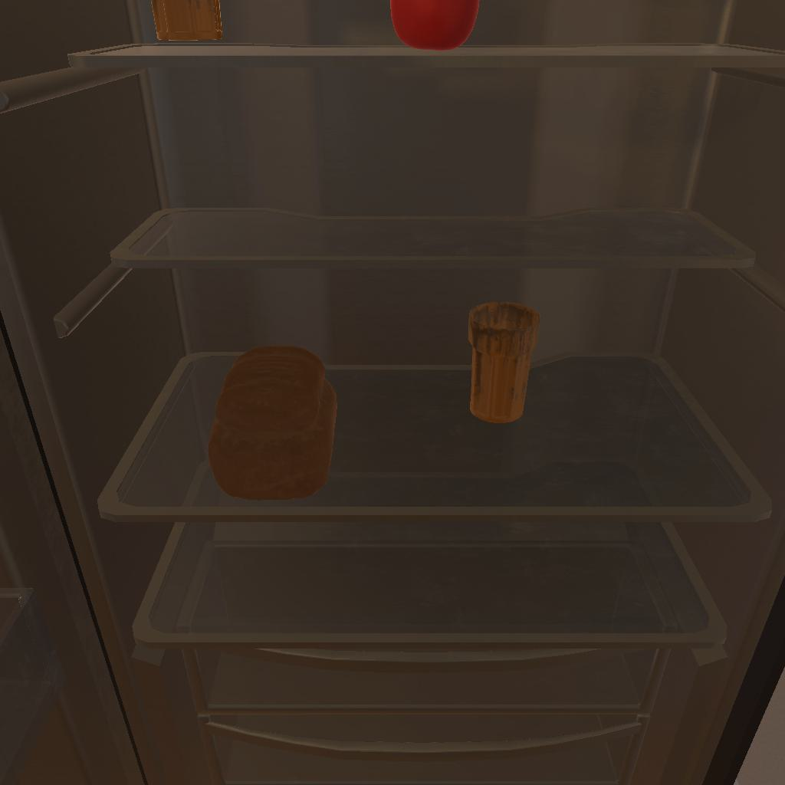

---------------------------------------------------------task: 13---------------------------------------------------------
--------------------------------------------------------------------------------------------------------------------------------------------------------------------
--------------------------------------------------------------------------------------------------------------------------------------------------------------------
Step:--------------------------------------------------------------------------3-------------------------------------------------------------------------------
----------------------------------------
VLM Prompt:
Image1:
Image2:
**Instruction**
1. Analyze the provided images to identify all visible household objects and compare the difference between images (e.h. whether the object is opened or not and taken on hand or not), focusing on those relevant to the task description "clean some tomato and put it in garbagecan."
2. Use the analysis of images and the task hint "The agent must find an object of the desired type, pick it up, go to a sink or a basin, clean the object with a sink or basin, and then find the correct location to place it and put it down there. The agent does not need to use soap bottle or faucet to clean the object, and the agent just needs to do action that is "clean the object with the sink or sink basin"." to answer the question: what is the most reasonable action in the choices for the task description "clean some tomato and put it in garbagecan"?
3. Decide and write the answer using the template: The answer is: (i): , where i is the real number. If there is no desired object in images, search every place based on **Initial Observation** to find the object. And if no one is exactly correct, choose a similar answer.
**Initial Observation**
You are in the middle of a room. Looking quickly around you, you can see countertop (1-2), cabinet (1-11), garbagecan (1), toaster (1), sinkbasin (1), fridge (1), sink (1), microwave (1), drawer (1-3), stoveburner (1-4), coffeemachine (1), diningtable (1)
**Answer Choices**
(1): go to countertop 1
(2): go to cabinet 1
(3): go to cabinet 2
(4): go to cabinet 3
(5): go to garbagecan 1
(6): go to cabinet 4
(7): go to toaster 1
(8): go to sinkbasin 1
(9): go to sink 1
(10): go to cabinet 5
(11): go to microwave 1
(12): go to countertop 2
(13): go to cabinet 6
(14): go to cabinet 7
(15): go to drawer 1
(16): go to stoveburner 1
(17): go to stoveburner 2
(18): go to cabinet 8
(19): go to drawer 2
(20): go to stoveburner 3
(21): go to stoveburner 4
(22): go to coffeemachine 1
(23): go to cabinet 9
(24): go to cabinet 10
(25): go to cabinet 11
(26): go to diningtable 1
(27): go to drawer 3
(28): close fridge 1
(29): take bread 1 from fridge 1
(30): take cup 1 from fridge 1
(31): take tomato 1 from fridge 1
(32): take cup 2 from fridge 1
(33): examine fridge 1
**Answer**
Let's think step by step by following the instructions.
----------------------------------------
----------------------------------------
Original Response:
Image1 is not very clear, but it seems to be a close-up of a dark surface, possibly the outside of a fridge or a similar appliance, although it's difficult to determine any specific details.
Image2 shows the inside of a fridge with very few items: a loaf of bread, a cup, and a tomato on the top shelf.
Based on the task description "clean some tomato and put it in garbagecan," we need to find a tomato, clean it, and then throw it away. The analysis of Image2 reveals that there is a tomato inside the fridge.
Following the Initial Observation, the agent needs to find the object (tomato), clean it with a sink or basin, and then dispose of it in the garbage can.
Since the tomato is visible in the fridge in Image2, the most reasonable next action from the given choices would be to take the tomato from the fridge and proceed to clean it. Therefore, the next action is to take the tomato.
The answer is: (31): take tomato 1 from fridge 1. After taking the tomato, the agent should then go to the sink or sinkbasin to clean it as per the task hint.
----------------------------------------
----------------------------------------
>>> Refine Original VLM Response and Get Pure Action: take tomato 1 from fridge 1
----------------------------------------
-----------------------------------------------------------------
Running time: 10.375959157943726 seconds
Total Money: 5.880860000000003
-----------------------------------------------------------------
-----------------------------------------------------------------
Text Observation:You pick up the tomato 1 from the fridge 1.
-----------------------------------------------------------------
UNSUCCEED